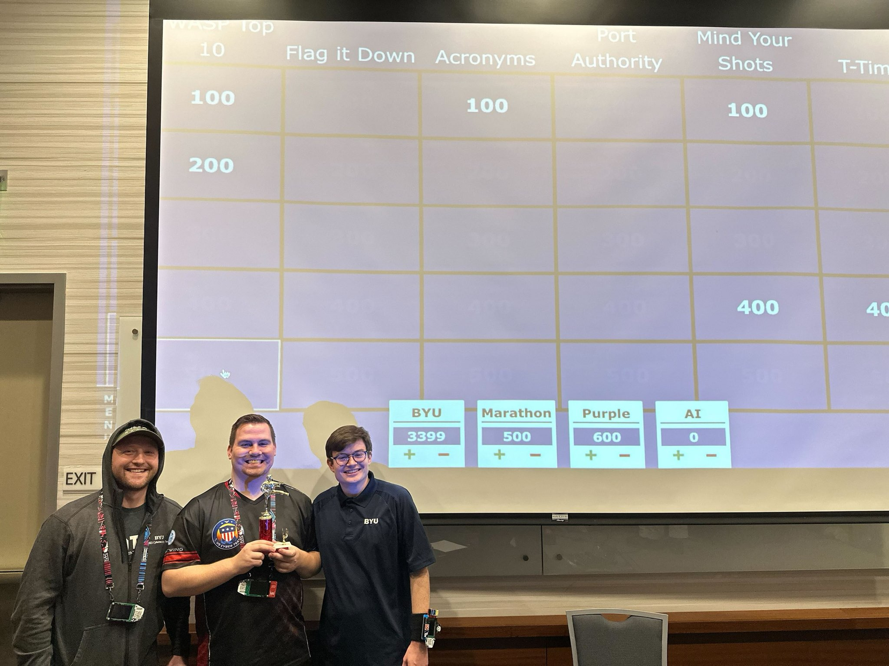
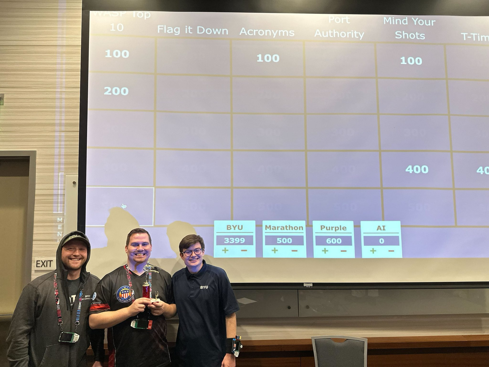

SAINTCON 2024:
“The solution to Cybersecurity, is found in the people, not the Technology”
This week marked my fourth SAINTCON experience.
Among the various conferences that I’ve attended over the years (6 or 7 different ones I can remember), SAINTCON has a way of always delivering just the experience I need.
I’d probably put it top two of my favorite conferences, and it isn’t number two.
This year, was no exception.
Let’s dive into why!
Reason # 1: Community
Selfishly, having gone to school in Utah, I use SAINTCON as a means of reconnecting with friends and keeping in touch with their latest endeavors. This year, it's been a fantastic experience to see those same peers on the big stages, presenting their work.
Shout out to Justin Mott and Justin Applegate, Ava Petersen for their vulnerability research on home routers, Anna Pratt for her fantastic breakdown of what goes into quality technical training, Katherine Rackliffe for her thought-provoking research on AI-phishing training, and Noah Pack for showing off his 3D printing wizardry.
During lunch one day, I had the great pleasure of discussing the challenges of generative AI policy at the government and educational levels with the Andrew "Spike" Brandt. His work with "Elect More Hackers" is not only worth paying attention to but also worth getting involved in. Helping our elected officials, potential officials, and general community leadership understand the risks and challenges of an ever-growing digital landscape is something we can't afford to ignore.
I'm grateful for SAINTCON's approachable culture that allows people from different corners of this industry to meet and learn from one another.
Reason # 2: Keynotes & Talks
Speaking of this industry, SAINTCON consistently outdoes itself with the caliber of keynote presenters it brings in. This year, I was able to attend two of the three keynote addresses: Dave Kennedy of TrustedSec & Binary Defense, and Jack Rhysider from Darknet Diaries.
What a combination! In addition to hearing my friends speak, I was especially looking forward to these two keynotes because of the impact both Dave and Jack have had on my interest and career in cybersecurity. I've followed both on social media for some time and have been consistently impressed with their tone and influence on the industry.
Dave's focus and mission on WeHackHealth exemplifies the type of healthy, balance-focused leadership needed in this field. Not to mention the shared Ohio connection and the impact of his giving back to high schoolers getting into cybersecurity. And Jack—I don't know if there's anyone who's had such a wide-reaching, penetrating impact on feeding passion and curiosity into technology and cybersecurity as he has. Darknet Diaries is hands down one of the shining gems in showcasing the possibilities in cybersecurity and helping spark interest in making this community a better place.
Dave's message about recapturing and harnessing curiosity in our field resonated deeply with me. During my time in school, I was fortunate to find and cultivate a tight-knit group of positive, incredibly smart, and capable people. I credit much of my accelerated cybersecurity journey to being surrounded by these individuals—many of whom I was able to reconnect with this week. Now, I'm working on replicating that same pattern in my professional life on the opposite side of the country.
Jack's presentation on how stories interact with our human interface was fascinating. While hearing his voice via podcast for hours is one thing, seeing him live was truly remarkable. I hadn't fully appreciated the extensive research that goes into his work—he truly has a gift for it. His performance was seriously impressive, especially considering this was one of his first live talks, delivered to an audience of over a thousand people.
Another standout was Steven Wallace's talk on RPKI ROAs and IP routing security. A year ago, I would have struggled to follow this presentation. However, after delving deeper into capital-N Networking, I greatly appreciated listening to someone with such deep knowledge and background in the field.
I’ve never been much of a bug bounty person, my bug hunting experience comprises stumbling upon a unsecured college subdomain that redirected to a employee spreadsheet showing personal schedules and information. That being said, I felt myself drawn to Bugcrowd’s Founder Casey Ellis’s talk on his experience in security compared from over a decade ago, to now.
I appreciated his candor in acknowledging that security has changed, that those entering the industry now are faced with different challenges than those from the previous generation. His encouragement to look for solutions among each other hit home for me. I’ve always considered myself a soft skill security person that has enough technical know how to keep my foot in the door.
Hearing his perspective in founding Bugcrowd that helped combat hostile conceptions about hackers via a human solution (providing a platform to bring bug hunters and VDPs together) was brilliant. It left me thinking about what other type of human or soft solutions exist to solve technical or cultural problems that we’ve been banging our heads against without success.
Reason # 3: VillageCon
Stepping away from my daily routine, it's refreshing to immerse myself in a conference's topics, villages, and competitions. The moment you enter the Provo Convention Center, you're enveloped by the Con's buzz and energy. Delving deeper, the passion for this conference and its many facets is truly inspiring. I'm particularly drawn to the mini-badge craze, with increasingly creative designs appearing each year.
Among the villages, I thoroughly enjoyed exploring the Space Hacking Village and the Social Engineering village's vishing calls. SAINTCON's perks are unbeatable—the unlimited soda is a standout feature that I'm glad they've maintained.
Let's not forget the backdrop: you'd be hard-pressed to find a conference with more stunning views.
The Uinta Mountains, though perhaps underappreciated, offer breathtaking natural beauty—though I admit I might be biased.
I would be remiss to not mention one last highlight of this year's conference. Thursday afternoon, as CTFs were wrapping up, I was enlisted in helping two of my former classmates with one last competition.
The SAINTCON Appsec Jeopardy game. With categories covering the OWASP top ten, types of Injections, Answers starting with T, Flags to common linux commands and common ports, we felt pretty good about our odds.
As you can see from the photo below, we did pretty well. Does this mean a run at hacker jeopardy at DEFCON is in the cards? Probably not. Not sure they'd be thrilled about an all sober team, but who knows.
The fun challenge from this was competing against an LLM that got the chance to answer if no team correctly answered.

In conclusion
SAINTCON is truly exceptional. I'm deeply grateful to Jupiter and the entire team for orchestrating another successful, well-organized conference. The smaller scale of the con is one of its greatest strengths, making it incredibly accessible and welcoming to both newcomers and seasoned security professionals alike.
This week has left me feeling reinvigorated and inspired to, as Dave Kennedy put it, "Do some epic stuff."
This blog post is hopefully just the beginning of that renewed energy. Who knows? I might even mess around and get myself a 3-d printer finally. Ultimately, I'm profoundly thankful for SAINTCON. I'm excited to return home, dive into those side projects that have been patiently waiting, and see where this newfound motivation takes me.
-ohCoz (Ian Cook)
SAINTCON 2024 Recap
Posted: October 30th, 2024 Email me: contact[at]ohcoz[dot]com Back to my Main page TwitterSAINTCON 2024:
“The solution to Cybersecurity, is found in the people, not the Technology”
This week marked my fourth SAINTCON experience. Among the various conferences that I’ve attended over the years (6 or 7 different ones I can remember), SAINTCON has a way of always delivering just the experience I need. I’d probably put it top two of my favorite conferences, and it isn’t number two. This year, was no exception. Let’s dive into why!
Reason # 1: Community
Selfishly, having gone to school in Utah, I use SAINTCON as a means of reconnecting with friends and keeping in touch with their latest endeavors. This year, it's been a fantastic experience to see those same peers on the big stages, presenting their work.
Shout out to Justin Mott and Justin Applegate, Ava Petersen for their vulnerability research on home routers, Anna Pratt for her fantastic breakdown of what goes into quality technical training, Katherine Rackliffe for her thought-provoking research on AI-phishing training, and Noah Pack for showing off his 3D printing wizardry.
During lunch one day, I had the great pleasure of discussing the challenges of generative AI policy at the government and educational levels with the Andrew "Spike" Brandt. His work with "Elect More Hackers" is not only worth paying attention to but also worth getting involved in. Helping our elected officials, potential officials, and general community leadership understand the risks and challenges of an ever-growing digital landscape is something we can't afford to ignore.
I'm grateful for SAINTCON's approachable culture that allows people from different corners of this industry to meet and learn from one another.
Reason # 2: Keynotes & Talks
Speaking of this industry, SAINTCON consistently outdoes itself with the caliber of keynote presenters it brings in. This year, I was able to attend two of the three keynote addresses: Dave Kennedy of TrustedSec & Binary Defense, and Jack Rhysider from Darknet Diaries.
What a combination! In addition to hearing my friends speak, I was especially looking forward to these two keynotes because of the impact both Dave and Jack have had on my interest and career in cybersecurity. I've followed both on social media for some time and have been consistently impressed with their tone and influence on the industry.
Dave's focus and mission on WeHackHealth exemplifies the type of healthy, balance-focused leadership needed in this field. Not to mention the shared Ohio connection and the impact of his giving back to high schoolers getting into cybersecurity. And Jack—I don't know if there's anyone who's had such a wide-reaching, penetrating impact on feeding passion and curiosity into technology and cybersecurity as he has. Darknet Diaries is hands down one of the shining gems in showcasing the possibilities in cybersecurity and helping spark interest in making this community a better place.
Dave's message about recapturing and harnessing curiosity in our field resonated deeply with me. During my time in school, I was fortunate to find and cultivate a tight-knit group of positive, incredibly smart, and capable people. I credit much of my accelerated cybersecurity journey to being surrounded by these individuals—many of whom I was able to reconnect with this week. Now, I'm working on replicating that same pattern in my professional life on the opposite side of the country.
Jack's presentation on how stories interact with our human interface was fascinating. While hearing his voice via podcast for hours is one thing, seeing him live was truly remarkable. I hadn't fully appreciated the extensive research that goes into his work—he truly has a gift for it. His performance was seriously impressive, especially considering this was one of his first live talks, delivered to an audience of over a thousand people.
Another standout was Steven Wallace's talk on RPKI ROAs and IP routing security. A year ago, I would have struggled to follow this presentation. However, after delving deeper into capital-N Networking, I greatly appreciated listening to someone with such deep knowledge and background in the field.
I’ve never been much of a bug bounty person, my bug hunting experience comprises stumbling upon a unsecured college subdomain that redirected to a employee spreadsheet showing personal schedules and information. That being said, I felt myself drawn to Bugcrowd’s Founder Casey Ellis’s talk on his experience in security compared from over a decade ago, to now.
I appreciated his candor in acknowledging that security has changed, that those entering the industry now are faced with different challenges than those from the previous generation. His encouragement to look for solutions among each other hit home for me. I’ve always considered myself a soft skill security person that has enough technical know how to keep my foot in the door.
Hearing his perspective in founding Bugcrowd that helped combat hostile conceptions about hackers via a human solution (providing a platform to bring bug hunters and VDPs together) was brilliant. It left me thinking about what other type of human or soft solutions exist to solve technical or cultural problems that we’ve been banging our heads against without success.
Reason # 3: VillageCon
Stepping away from my daily routine, it's refreshing to immerse myself in a conference's topics, villages, and competitions. The moment you enter the Provo Convention Center, you're enveloped by the Con's buzz and energy. Delving deeper, the passion for this conference and its many facets is truly inspiring. I'm particularly drawn to the mini-badge craze, with increasingly creative designs appearing each year.
Among the villages, I thoroughly enjoyed exploring the Space Hacking Village and the Social Engineering village's vishing calls. SAINTCON's perks are unbeatable—the unlimited soda is a standout feature that I'm glad they've maintained.
Let's not forget the backdrop: you'd be hard-pressed to find a conference with more stunning views.
The Uinta Mountains, though perhaps underappreciated, offer breathtaking natural beauty—though I admit I might be biased.
I would be remiss to not mention one last highlight of this year's conference. Thursday afternoon, as CTFs were wrapping up, I was enlisted in helping two of my former classmates with one last competition. The SAINTCON Appsec Jeopardy game. With categories covering the OWASP top ten, types of Injections, Answers starting with T, Flags to common linux commands and common ports, we felt pretty good about our odds.
As you can see from the photo below, we did pretty well. Does this mean a run at hacker jeopardy at DEFCON is in the cards? Probably not. Not sure they'd be thrilled about an all sober team, but who knows. The fun challenge from this was competing against an LLM that got the chance to answer if no team correctly answered.
In conclusion
SAINTCON is truly exceptional. I'm deeply grateful to Jupiter and the entire team for orchestrating another successful, well-organized conference. The smaller scale of the con is one of its greatest strengths, making it incredibly accessible and welcoming to both newcomers and seasoned security professionals alike. This week has left me feeling reinvigorated and inspired to, as Dave Kennedy put it, "Do some epic stuff."This blog post is hopefully just the beginning of that renewed energy. Who knows? I might even mess around and get myself a 3-d printer finally. Ultimately, I'm profoundly thankful for SAINTCON. I'm excited to return home, dive into those side projects that have been patiently waiting, and see where this newfound motivation takes me.
-ohCoz (Ian Cook)